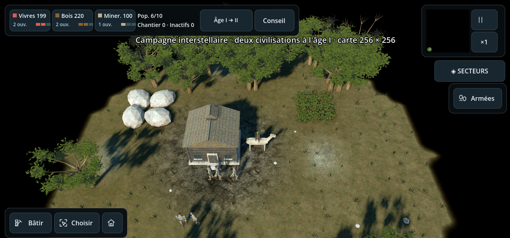
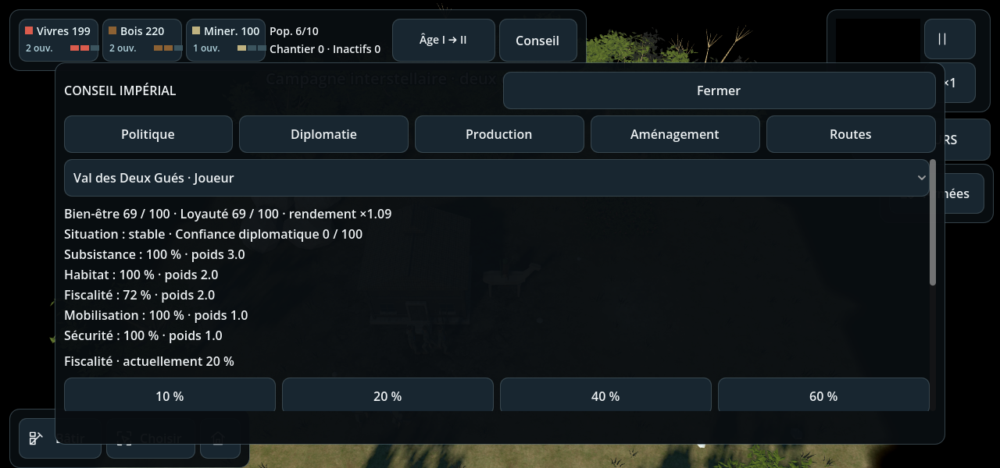
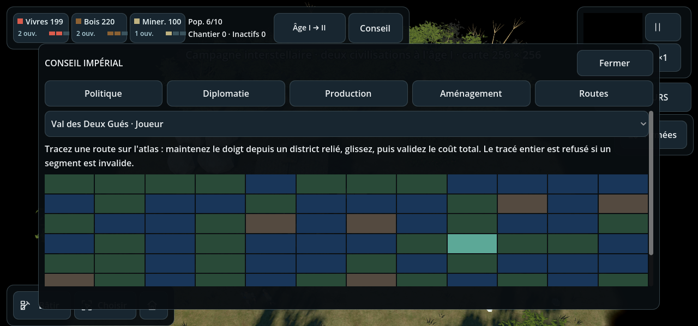

Captures du moteur Godot 4.7.2 sous Linux, rendu OpenGL logiciel. Elles montrent la nouvelle campagne et son conseil impérial ; elles ne constituent pas une mesure de performance Android.



Consulter aussi les vues des dix âges et de la refonte 0.13.5